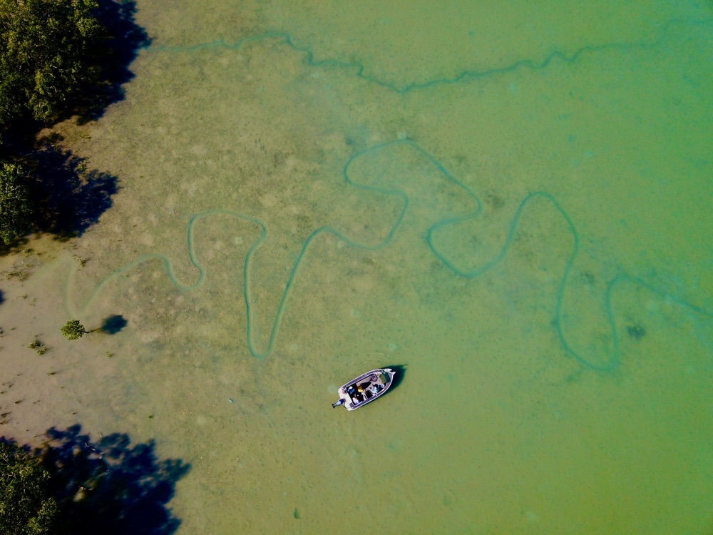

Listen · 13 min
Originally broadcast on 3AW / Nine Radio. Listen on the Bag a Barra, Oz Off Road Radio.
Read the full transcript (2,694 words)
It's time to head to the Top End and Bag a Barra with Glenn Watty Watt, thanks to Barefoot Fishing Safaris and uniden for the best in UHF radio communications. explore the extract series at uniden.com.au. Oh, I love it when we catch him out on the boat and he's out there somewhere. I've got no idea where he is.
Of course, I am talking about our man, Glenn, what do you want? From Barefoot Fishing Safaris. Look, I've got to say, he's... I mean, I don't know what the, he calls it a job. He actually calls this work.
I mean, most people I know go fishing on the weekend and, you know, kickback and relax. does it every day. Where are you, son? That's right, mate.
I am in the middle of Bynoe Harbour, right at the very northern tip of Indian Island. I've got Darren here and we're playing around with some queenies while we wait for the tide to push a bit like we seem to have been doing a few times lately when you call. So, yeah, and it is work, mate. We've both got a pretty good sweat up here at the moment, so it's definitely work.
Yeah, well, you'll be... Well, I'm not sweating. I mean, mate, please, it's been a while since that's happened, but in my case. But mate, no.
So Indian Island. I mean, I've never heard of that. Yeah, so Indian Island's right in the middle of the massive Bynoe Harbour. It's um, it's what splits the eastern sides from the western side, I suppose, and that is the tiniest fish ever.
Karen's just caught a little Indonesian snapper that's about 6 centimetres long, so we might let him go. Um yeah. And uh Indian Islands, it's covered in big rocky points and awesome Barramundi mud flats as well. So right now we're on a neat, neepish, low tide, so pretty clean water, not much movement, low tides, all the rocks are poking out and um, yeah, we're just um, moving along the edge steering, finding some clean fish and valley and um, miniature size.
Look like they've been one of those shrinkers used to get in the cereal box. Um, in this snapper at the moment. So, um, beautiful day, bugger all wind, and it looks like it should get even better as it glasses out and we go out around the island. Unbelievable. So how far from Darwin is that?
So west of Darwin, is it? Yeah, to the west of Darwin. We're probably by boat. probably about exactly halfway from, you know, Diner Beach and the waterfront area and Dundee.
I could be at either in probably about an hour from right where we are in these conditions. So, um, huge area, of course, but also something that we used to do a lot of was launch inside Darwin Harbour and drive right around here to where we are right now. So, well, this time of year when you get these really calm seeds, it's the perfect opportunity to do that sort of thing. Yeah, it's amazing, isn't it?
Because it's funny because down here, hey, this part of the world, uh, on the east coast and, you know, off, you know, and I'm talking off Sydney and Brisbane probably. It's this time of year when you get the bigger, yeah, the afternoon, nor'easters and the bigger swells and stuff. But in wintertime, it's as flat as. So it's a bit opposite up there, is that right?
Yeah, well, we'll get a predominantly Wesley flow here. Once that season really changes and we get into the monsoonal time. It'll probably happen in the next few weeks. But yeah, our our windiest time, I suppose, for the fishing season is that June, July, August time, um, in the wintertime when we get in that, uh, you get those big high pressure systems down in the Great Australian Biden and through the desert in Western Australia, it pushes the cold air up, um, over the territory here.
So, yeah, this time of year, it, it frees us up, it opens us up again to really fish a lot of areas that have, um, had wind on them for the last few months, or perhaps, you know, not for, um, exactly the last few months, but through that June, July, August period. Yeah, so it's great to be able to fish whole different areas in a, in a, in the same spot you've been fishing all year. Yeah, unbelievable mate. I mean, it's, it's, is there many boats out there or is it a few locals, I guess, now?
Ah, well, not right now, mate. As far as we know, we're the only ones out here today, haven't seen another soul, but um, that's sort of good. That's the way we like it, of course. And that's generally what happens at this time of year as well.
But yeah, there's always a few local boats out on the weekends, especially on these really nice tides like we've got right now. Yeah, so the normal hard workers are out doing it. Um, you know, on the weekend when uh, the weekend you're just today. Well, I'll be here too. Don't worry, mate.
you know, days of the week don't matter much to me. It's more about all the ties and the weather. I don't know what day it is most of the time. Yeah, well, we know that. I may not mean that part of it, we know.
So, you mentioned that you get into the snapper and all that there. I mean, so it's it is a good time, isn't it? I mean, like to get up there and get those different species. They run different times of year, like things like snapper and that, like now's the time of year to be getting those, because through wintertime, are they a bit quiet or they always around?
Yeah, well, this is actually the time of year when Golden Snapper and Dewey's coming to shallower water to spawn as well. So, yeah, it's as far as that goes, it can be a better time. But they're here all year, and they probably just school up a bit more and become a bit easier to catch at this time of year. Yeah, fair enough, mate.
And this is a mate or is this a paying customer who's out with Barefoot at the moment? No, mate, I'm working here. Don't worry about that. Oh, mate, of course.
I get it. I mean, I mean, fair, you can be kidding, don't you? Was he on time? Remember that time I was late, 3 minutes or something?
Well, I mean, you can be late for anything else up here, mate, but not for fishing because the tide does not wait for anyone. Yeah, no fair enough. I remember that time I was, oh, mate, didn't I? I copped it for 2 years over that.
What was all about? Five minutes late. you weren't late? Yeah, the thing that got me, though, was that, no, no, I didn't learn me lesson, because while you were carrying on like a pork chop,
Then we got down, I think, was it to the Corroboree tavern or the server or somewhere. And then we'd just sit there for 20 minutes waiting for it to open to get your bacon and egg roll. Exactly, mate. You want to get the 1st one off the grill? That's always the best one
So it didn't matter. I could have taken an extra 10 minutes if I wanted to. Well, you could have. But anyway, we'll see what happens next time.
No, no, no, no, fair enough, mate. All good. And what about everywhere else up there at the moment, mate. All fishing well?
Well, I guess it's happening all like the river systems and out of corrobory where someone jagged that 1000000 bucks the other day. You know, there was a little fishing there, made everywhere else. Yeah, that's right. There's been another tagged fish court since we spoke last two, mate.
There's, um, there was one in Buffalo Creek, right off the bank there, um, close to where everyone lives, and that was a 20 grand fish because it must have been in some sort of double your money time or something like that. There's a few of them rot here. You're just busting over here. Oh, look at this. This is all happening, isn't it?
This is as real as it gets. We're actually fishing with you. Too bad it's not, you know, we can't see it, but... Maybe one day we'll do a live broadcast that they, you know, fake live or something like that. Yeah, Facebook Live, YouTube, you know, we're right into all that stuff here, you know.
And now look, they're just on another matter. We've got you, you know, I mean, as you know, I've got nothing better to do all day than run around and run your errands. We picked up your new truck. It's pretty good
Yeah, well, I keep having bad dreams every 2nd night about what's happening to me new year down there, but very much looking forward to getting down there. This is the last week of fishing for the season for me. So another half a dozen days and then get everything tidied up in preparation for big road trip back up from Sydney, mate, back up in that new year, up via the Gold Coast and back off the territory. No, mate.
Well, the people that I'm hiring it out to, love it. Hope you're getting good money for it. Oh, yeah. No, mate.
No, I picked it up for you, mate. It's parked here, safe and sound, undercover. looking after you, mate. All over. The big F 150.
They're good Yeah, yeah. Well, what a coincidence that you bought one at the same time, eh? Anyway, I haven't told anybody about that.
But yes, thanks, mate. That's all good. But yeah, so yeah, no, they are very, very good, mate. And anyway, but that's all good, mate.
And then you're going to have some time off and do a bit of travelling back and go up through Queensland and go back into the territory that way, which have you ever done that before? No, I haven't, mate. That's the only sort of big road trip leg that I haven't done in Australia is sort of cutting across in Queensland to the Top End. So that's going to be cool and I mean, it's probably not the best time here for us to travel between Christmas and New Year's. As far as seeing and doing stuff goes, but that's okay.
We're on a bit of a mission. It would just be nice to travel through all that country. Yeah. Oh, mate, you'll see plenty, like, mate, there's plenty to see and do along the coast, but I mean, it's got to be warm when you get inland, but geez, I tell you what, mate, you're in for a bit of a treat.
I mean, you're going to go through some great little towns and places and you'll go through Long Reach and Winton and if you had time, if you're into that sort of thing, old history, you can duck out to Old Cork station on the Darling, you might get jag a yellow belly there or something on the Diamond Tina. Oh, sorry, not the darling, the diamond Tina. Yeah, after all that, if the, um, if the stockman's all the famed, open, we'll definitely, um, employ that in the in the trip as well. Yeah, you want to do that, go and call in, and call into the Walkabout Creek pub. I got my old mate, the old publican coming on today for a bit of a catch up, Frank.
He was the best public. He was the best public in Australia, you know. He might have got burned out after serving you, did he? Oh, no, no, no, no.
One thing, one thing, I'm sure it's still the same now. But the beer was very good there because he was forever monitoring and testing the product. Oh, that's very important part. Yeah, so he said it was a tough job, but it had to be done.
So he was all over that. And, you know, we're going to catch up with him to see how life is on the pension for him now. He's probably the richest blake in Bill of Wheeler, to be honest. but anyway.
He probably drank all the profits, did he? That the problem. Well, he reckons that couldn't be done. He tried that.
Oh, he gave it a try, yeah. Yeah, he reckons it couldn't be done. Yeah, he reckons that could not be done and he tried to do that. And he just couldn't get, he couldn't do it.
He just said to mate, so it was a good pub. So, oh, mate, who's got it now is, I don't think anyone would be drinking like Frank. Um, probably making more money than Frank did. Yeah, well, I mean, it's good that he tried such a scientific experiment for the hospitality industry.
So I'm sure that's written up somewhere in the how to run a successful hotel business guidebook. I guess so. I don't know, mate. That's why I can't have one of those.
I would get that done. That's why I just can't. I just couldn't do it. Be better. You know, you would need one either.
All right, mate. Will you hang there? You're going, all right, you get back to the fishing. Look after you, mate, there, and hopefully you'll jag in a few. Jeez, I'll tell you what, mate, mate.
come this doesn't happen when I go. What have we got here? This might be a wolf herring, I think. Yeah, it is. That's a wolf herring.
I've no idea what that is. What is that quickly? Well, warfaring is one of the few herring species we get up here. They jump and carry on, like this one is, and they're covered in slime.
Oh, we can hear him splashing. and yeah, there you go. And they've got huge big teeth like a wolf. I'll send you through my photo so you can chuck it up on the Facebook page.
Alright, mate, we'll do that. Okay, well done, you get back to your fishing while you're sweating it out there. And I'm sure you'll, I'm sure you'll, um, you'll wash down the day somewhere later on. We'll talk to you later, eh?
Talk to you next week. Oh, listen, look, 40 days are right in that truck, F truck, we're hiring it out. Is that all right? Oh, sorry, an hour, 40 an hour.
40 a kilometre, mate. Lets up the race. You know, fair enough. All right, you enjoy.
Well, mate, good on you. There he is. Glenn Woody, Watt. Barefoot Fishing Safaris and he's up there right now.
You can hear the fish splashing in the water. How good is it? And we tried to be the real deal here, that's for sure. And up there in the northern territory.
I would reckon he would be sweating it out up there now, it'd be pretty steamy, pretty hot, and the humidity, be building up, ready for them big monsoonal range that they get there. A little bit later on, but it certainly would be a nice place to be out there on the water, up there in the Top End and just, I mean, he would have caught 3 or 4 fish just talking to us. I mean, how good is it? Not that little one through back, but he was back onto them. And he certainly knows what he's up to there.
If you want to get up there and enjoy that sort of experience. Well, you just got to go to Barefoot Fishing Safaris. Look up our mate, Watty, and go fishing with him.